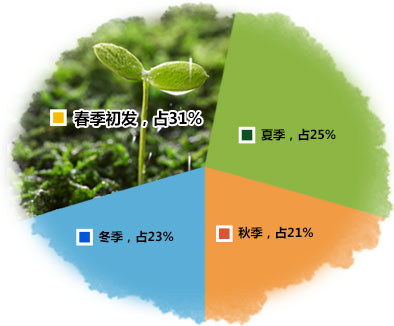

part 1 银屑病病发以春季居多
- 
-
银屑病发生发展与季节有明显关系，全国调查分析10404例银屑病患者初发季节以春季最多。中医讲"天人合一"，春季的特性是生长和升发。春天，时令给身体注入了阳气，人的机体有一个本能，一旦有了动力，就要冲击身体的病灶，并将病邪赶出体外，冬病春发。中医认为"春主肝"，肝气向来不充足或用肝过度的人，导致肝失于濡养，肝脏功能活动跟不上春季异常气候的变化，可导致银屑病病发。
春季人体气血外延，身体内部脏器、经络间的病灶容易被反映出来，此时最易诊断疾病。
春天生机勃勃，这种生长之力源源不断地为身体注入了强大的动力，我们若能借天时之力而去病除疾，有四两拨千斤的功效。
- 中医认为，春天阳气上升，易扰动人体肝、胆、胃肠内蓄积的内热，出现春燥，表现为比较容易生气，情绪、心理、精神波动较大，不良的情绪在一定程度上可加重银屑病病情。
- 春季乍暖还寒，天气变化较大，早晚温差明显，很容易导致人体生理机能失调，从而引发上呼吸道感染，进而引起病情加重或复发。
- 春季万物复苏，花粉、柳絮四处飘散，很容易引发敏感患者过敏的症状；春季气温回升，细菌也开始滋生，增加了感染的可能，而过敏和感染都很有可能加重病情。
- 春天属阳，阳气外发，皮肤舒张，风寒容易入侵，心火会与入侵的风寒相对抗，阴阳正邪相争于肌表，极易导致病情加重或复发。
- 春季虽然开始回暖，但天气仍很干燥，容易上火，出现血热、血燥、血瘀等问题，而干燥上火引起的蕴积滞阻过多又会导致瘟毒发于肌肤，进而引发病情复发加重。

 021-6519 1999点击了解更多案例
021-6519 1999点击了解更多案例part 2 春季病发，及时治疗
part 3 DFMZ308-中医生物活化疗法
part 4 DFMZ308-中医生物活化疗法研究团队
part 5 DFMZ308-中医生物活化疗法康复患者
021-6519 1999点击了解更多案例part 6 春季病发，及时治疗
-
多晒太阳
春季晒太阳的时间以上午10点之后、下午3点以前为好。在阳光紫外线的照射下，皮肤中的7-脱氢胆固醇转变为维生素D3，可以促进身体吸收食物中的钙和磷，增强抵抗力。紫外线还有杀菌消毒的作用，能帮助皮肤血管扩张，促进血液循环，对春季病情防治有良好的帮助。
-
多喝水
春季天气虽回暖但仍旧十分干燥，很容易造成人体缺失水分，银屑病患者春天多喝水有利于补充机体水分，维持正常的代谢需求，改善皮肤干燥状况。银屑病患者喝水要温度适宜，水温一般保持在10~30℃为宜。喝水尽量保持少量、多次、慢饮的准则，不要只在觉得口渴的时候才喝水。
-
保持良好心态
精神因素是诱发银屑病的重要原因。春季气温开始升高，皮损部位可能显露人前，引发议论，进而增加患者的心理负担。对于可能的议论，银屑病患者要稳定心情，不要有思想包袱或给自己太大压力，更不要有自卑感，保持良好心态，及时缓解心理压力，正确面对、积极治疗。
-
适当锻炼
加强锻炼有利于增强机体应对外界刺激的能力，提高免疫力。银屑病患者春季运动需选择合适时间，气温较低时，锻炼时间不宜过早，可在早上九点钟不空腹的情况下进行，也可在午睡后三四点。春季运动宜选择较为舒缓的全身运动，如慢跑、打太极拳，时间掌握在30分钟为宜。
-
正确护理
春季气温变化较大，患者外出时需根据天气变化适时增减衣物；日常生活及时补充蛋白质，观测血压、体温及水、电解质平衡等；注意保暖，防止因皮肤血管扩张而引起体液和热量的大量丢失；避免食用辛辣刺激性食品、鱼腥海味和肥甘厚味之品，减轻各脏器的代谢负担。
春天是万物复苏的时节，健康人并不需要特别进补，而有慢性病的人可按照"春夏养阳"的原则，咨询医师，进行辨证调治，这样既能控制旧疾，又能预防新病，切不可滥用补药。此外，无论什么病，春天调治，都需遵循"平肝泻胆"的原则。